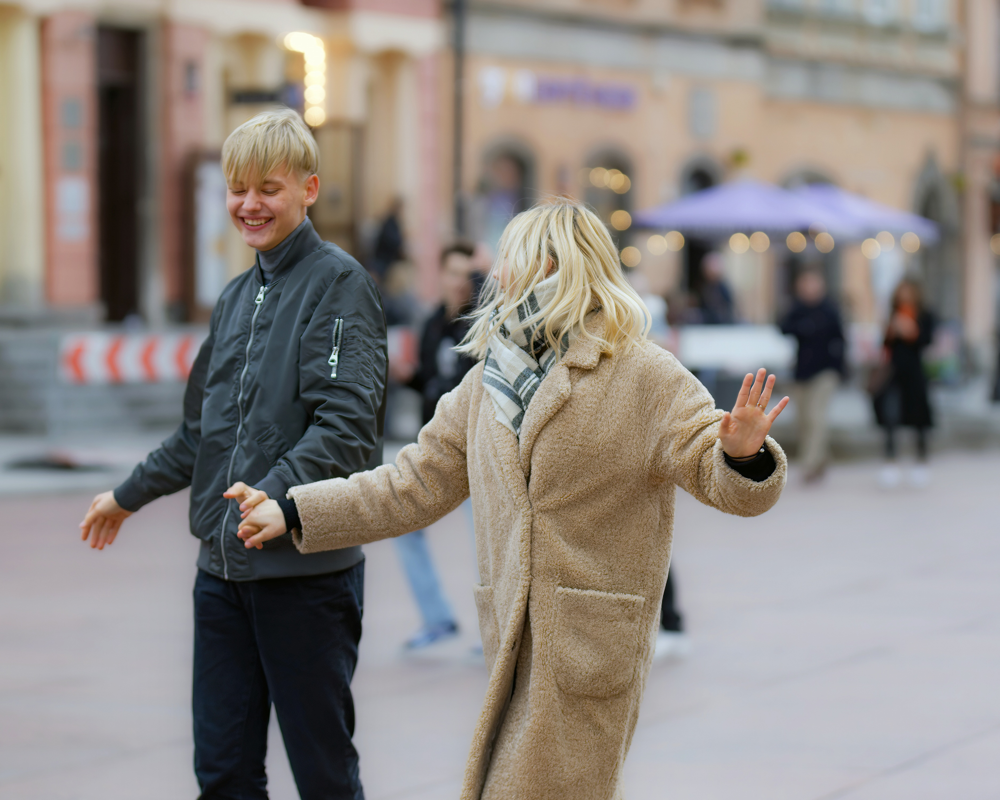
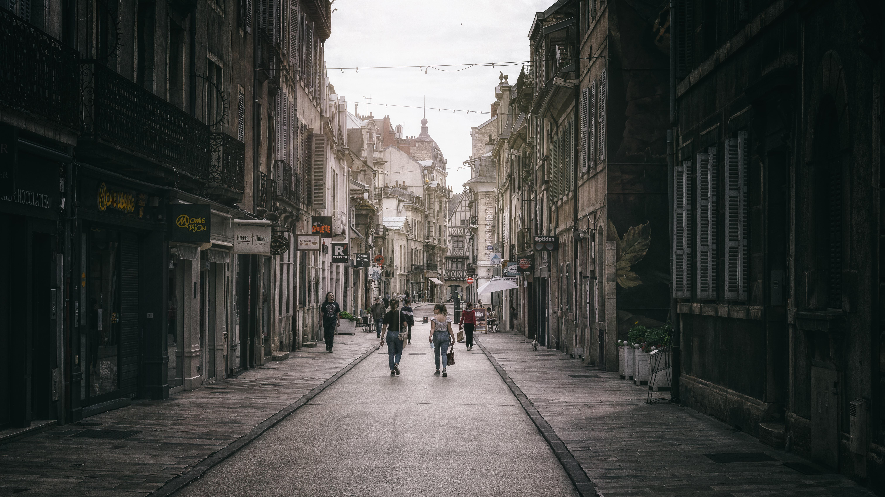

About
Home / About
UrbanWalk² is dedicated to capturing the authentic rhythm of city life through immersive
street exploration and visual storytelling. Every walk is an opportunity to discover hidden
corners, vibrant neighborhoods, and the people who bring the streets to life.
Our mission is to transform everyday city moments into inspiring journeys worth remembering.
Our mission is to explore the streets with curiosity and purpose,
capturing authentic urban moments that often go unnoticed.
We aim to document the culture, architecture, and everyday life
that define each neighborhood and give every city its identity.
Through every walk, we tell stories that connect people to places.
Our vision is to inspire others to see cities differently — not just
as destinations, but as living stories waiting to be explored.
We strive to build a visual archive of urban experiences that
celebrates diversity, creativity, and the rhythm of street life.
Every step forward is a new perspective to share.
Monstroid² has everything to get you covered. Take a look at the
child themes included with the full template version. They cover
most popular spheres of interest including Art & Photography,
Business, Education and Design.

Urban Adventures
Every walk is a new adventure through
busy streets, quiet alleys, and hidden
corners waiting to be discovered.
Explore Any Neighborhood
From modern skylines to historic
districts, each route offers a unique
urban experience to capture and share.
Discover Hidden Gems
Find street art, local cafés, markets,
and everyday moments that define
the soul of the city.
Real Street Stories
Meet people, hear conversations,
and experience the authentic rhythm
of urban life.
Share the Journey
Document your walks and connect
with others who love exploring
city streets and culture.
Visual Storytelling
Turn simple walks into compelling
photo stories that reflect the energy
and diversity of urban spaces.
Our team of explorers is driven by curiosity and a passion for urban discovery.
Each member brings a unique perspective to the journey — capturing authentic street moments,
uncovering hidden city gems, and documenting the culture that shapes everyday life.

UrbanWalk is a creative street exploration platform focused on documenting authentic city experiences. From architecture and street culture to everyday urban life, it celebrates the beauty found in simple walks through dynamic city landscapes.
Michael Turner on
Exploring the Heart of Downtown
Sophia Lee on
Hidden Cafés You Shouldn’t Miss
Daniel Brooks on
Address: 4578 Marmora Road, Glasgow, D04 89GR
Phones:(800) 123-0045 (800) 123-0045
Email: info@urbanwalk.org
We are open: Mn-Fr: 10 am-8 pm